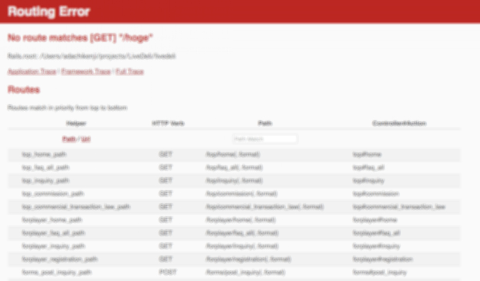
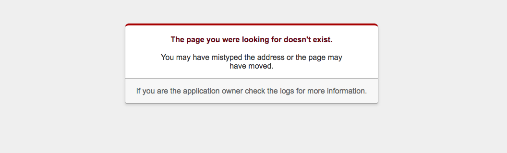

[Rails]404/500などのエラーページって結局どうすればいいの？
「そういえば404エラーのページってどうやって作るんだろう」と思い調べてみました

目次
この記事はこんな人が書いています
 だちけん
だちけん
株式会社ムジカルを設立し、webアプリケーションの開発、webマーケティングを担当しています。
webアプリケーションでは、Vue.js、Ruby on Rails、Node.jsを用いての開発が得意です。
まったくゼロの状態から、要件定義を含めてシステム開発にとりかかったことで、幅広い知識を学習しながらよしなに進めるスキルを身につけました。
フリーランスとして、エンジニアリングやコンサルティングも行なっています。
詳しくはaboutを読んでみてください。
Railsでアプリケーションを開発している時にふと、「そういえば404エラーのページってどうやって作るんだろう」と思い調べてみました。
※こちらの記事は、Qiitaにて公開していたものを2020/03/01にこちらに移行しています。
元記事はこちら
※現在はこちらのページのURLのみ記載されています。
基本Railsが勝手にいい感じにしてくれます。
まず大前提として、作る必要はありません。
というのも、Railsが自動で作ってくれています。
じゃあルーティングはどうするの？ということですが、それも勝手になんとかしてくれています。
なのでとくにエラー画面をおしゃれにしたい！とかじゃない場合はなにもしなくても大丈夫です。
Railsさんすごい。
参考: 他の記事と言ってることが違う！と思ったあなたへ
「rails 404」とかでググると、こんな記事がたくさん出てきます。
これらの記事では、application_controller.rbを触ったり、404ページを1から作ったりしていますが、よくない方法のようです。
僕には理解できませんでしたが、Railsの404,500エラーページをカスタマイズのコメントで詳しく説明してくださっています。
※ここに書いてあることがわかる人はこちらの方法で動的なページを作られるといいと思います。とりあえず公開したい！という僕のような人は後に書いてある方法でおとなしく静的なページを作るべきだと思います。(動的、静的については後で少し触れます。)
僕もはじめこれらの方法でやっていたのですが、http://localhost:3000/hoge.txt のように、拡張子がhtmlじゃない場合に意図した画面遷移にならなかったので修正しました。
まずはエラー画面を確認しよう
先ほどRailsが自動で作ってくれていると書いたエラーページについては、publicの中にあります。
- public/404.html
- public/422.html
- public/500.html
の3つがエラーページになります。(これらの違いは後で説明します。)
まずはこれらのページが実際にエラーの際に表示されるようにしましょう。
なにも触らないままdevelopment環境で適当なアドレス打ってみても、こんな画面が出ますよね。

なのでエラー画面を確認したい！という時は、config/environments/development.rb の中身を少しいじる必要があります。 こんな感じでコメントアウトしてある部分を、コメントアウトを外しfalseにしてみてください。
# config/environments/development.rb
config.consider_all_requests_local = false
僕の場合は13行目ぐらいにありました。
その後サーバーを再起動して、適当なアドレスを打ち込むとこんな画面が出てくるようになると思います。

この画面がRailsが自動で作ってくれた404エラーページ(=public/404.html)になります。
これを修正すれば、自分だけのエラーページの完成です！
エラーページを修正しよう
エラーページを修正するために、まずは400、422、500の違いを知りましょう。
LIGさんの記事によれば、
- 404 Not Found: リソースが見つからなかった場合。
- 422 Unprocessable Entity: WebDAVの拡張ステータスコード。
- 500 Internal Server Error: サーバ内部でエラーが発生した場合に返される。
だそうです。
僕は修正するための文言はこちらの記事を参考にして作ってみました。
Railsアプリケーションの422エラーページの文言をどうするといいのか調べてみた
参考: 静的ページ、動的ページについて
なぜRailsなのに、エラーページは拡張子が.htmlなんだろう？と思われた方もいらっしゃるかもしれません。
これには、この作り方では静的なエラーページしか作れないことが関係しています。
めっちゃ簡単に説明すると、静的なページとはデータをそのまま表示するページのことです。
.html.erbにしてしまうと、.htmlに変換が必要なので、静的なページとは言えないのですね。
参考: 静的ページ/動的ページとは？
静的ページをRails慣れした人が触る際に注意すべきこと
先ほど説明したように、この方法ではエラーページが静的なページになってしまいます。
そのため、cssファイルの読み込み等はできません。
cssなんかはhtmlファイルにベタ書きすればいいのですが、僕は画像の挿入で少し戸惑いました。
Rails慣れしていると、 <%= image_tag %>が使えないとURLの指定をどうしたらいいかわかりませんね…
結局、public/imagesの中に入れて、以下のような書き方でなんとかしました。
<img src="https://hogehoge.com/images/[画像ファイル名]">
エラーページにはロゴとかないと「急にわけわからないページになった！」と不安になりそうなので、ロゴ入れておいたほうがいいかなと思います。